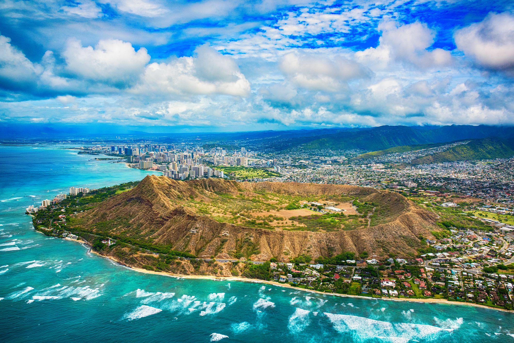
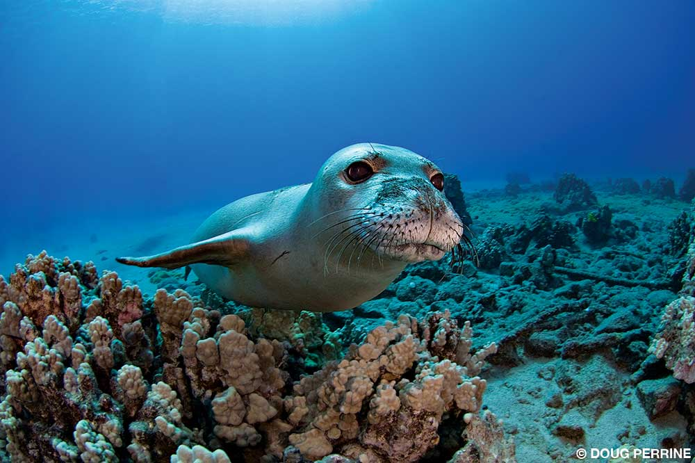
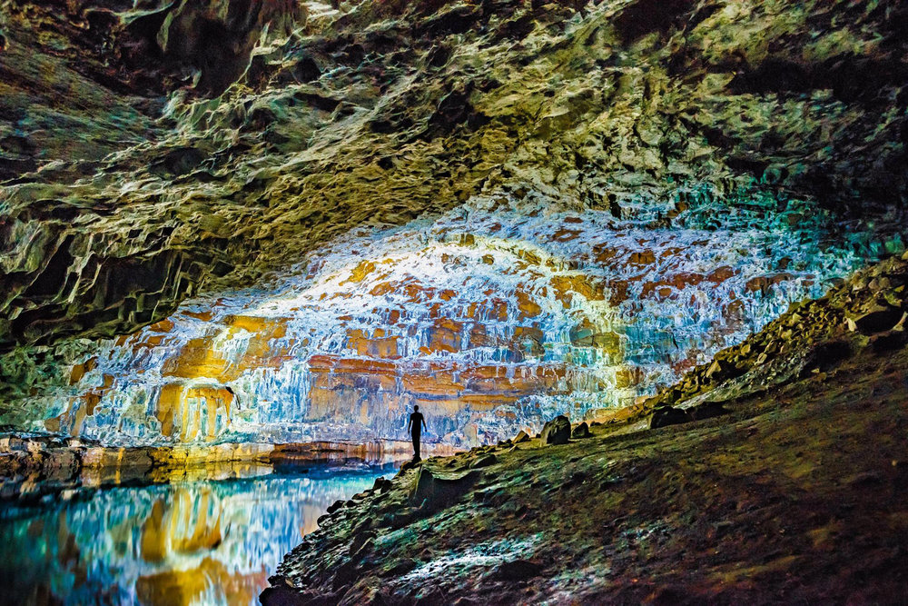

<div class="container project-view">
    
	<div class="row">
        <!-- <div class="col-md-4 project-images" align="center">
            
		</div>
		
        <div class="col-md-4 project-images" align="center">
            
		</div>

        <div class="col-md-4 project-images" align="center">
            
		</div> -->
		

 		<div class="col-md-12">
            <div class="project-info">
                <h2>Egypt 9N 10D - Treasures of Egypt</h2>

                <div class="details">

                    <div class="info-text">
                        <span class="title">Category</span>
                        <span class="val">Honeymoon</span>
                    </div>
                    
                    <div class="info-text">
                        <span class="title">Price</span>
                        <span class="val">INR 1,17,000 per couple onwards</span>
                    </div>

                    <div class="info-text">
                        <span class="title">Inclusions</span>
                        <span class="val">Accommodation, Breakfast, Hotel Transfers, Sightseeing / Entrance fees, Travel Guide</span>
                    </div>
                    
                </div>

				<span class="val">Itinerary</span>
				
				<br/><br/>
				Day 1: Cairo: Arrival at Cairo International Airport, greeted by a representative who will assist the group through immigration and customs formalities. 
				Transfer to your hotel in Cairo for check- in & overnight.

				<br/><br/>
				
				Day 2: Cairo – Alexandria – Cairo: After early morning breakfast, transfer to Alexandria. Upon arrival, 
				proceed for Full day visits of Catacomb, Roman Theater, Pompey’s Pillar, view of Citadel of Qait Bay from outside and Montazah Gardens. 
				After visits transfer back to Cairo for overnight. (B)

				<br/><br/>

				Day 3: Cairo-Aswan: Check-out after breakfast. At 08:00 am proceed for Full day visit of the Great Pyramids of Giza, Sphinx, papyrus fair, perfume factory, and cotton shop. 
				Continue visits to the Egyptian Museum and Khan El Khalili Bazaar. After visits free time till transfer to Cairo station to board the sleeper train to Aswan. 
				Dinner and overnight on board. (B, D)

				<br/><br/>

				Day 4: Aswan-Nile Cruise (Every Friday or Wednesday): Arrival at Aswan station, greeted by a representative. 
				Proceed to visit the Philae Temple, High Dam, and unfinished Obelisque. 
				After visits transfer to your Nile cruise for check-in. Overnight on board the cruise. (B, L, D)

				<br/><br/>

				Day 5: Nile Cruise: Early morning with breakfast box, at fixed convoy time at 04:00 am, transfer to Abu Simbel. 
				Visits Temple of Abu Simbel. At around 13:00 sail to Kom Ombo, visit Kom Ombo Temple. Sail to Edfu & overnight on board. (B, L, D)

				<br/><br/>

				Day 6: Nile Cruise: After breakfast, proceed to visit Edfu Temple. Later sail to Luxor. Overnight on board. (B, L, D)

				<br/><br/>

				Day 7: Nile Cruise – Luxor – Cairo: After breakfast, check- out and proceed to visit Valley of Kings, Queen Hatchepsut Temple and Colossi of Memnon. 
				In the afternoon visit Karnak Temple, and Luxor Temple. 
				After visits transfer to Luxor Airport to take your flight to Cairo (on your own). 
				Upon arrival in Cairo, you will be greeted by a representative. Transfer to your hotel for check-in & overnight. (B)

				<br/><br/>
				
				Day 8: Cairo – Sharm El Sheikh: Check-out after breakfast, and transfer to Cairo airport to take your flight to Sharm El Sheikh (on your own). 
				Upon arrival at Sharm El Sheikh Airport, you will be greeted by a representative. Transfer to your hotel for check-in & overnight. (B, L, D)

				<br/><br/>

				Day 09: Sharm El Sheikh: After breakfast, the day is at leisure to enjoy the sun, sandy beaches, and crystal blue sea. Overnight in Sharm El Sheikh. (B, L, D)

				<br/><br/>

				Day 10: Sharm El Sheikh: After breakfast, check-out and transfer to Sharm El Sheikh airport for departure flight. (B)

				<br/><br/>
				<br/><br/>


				<span class="val">Cancellation Policy</span>
				<br/><br/>

				Cancellation Policy may vary from hotel to hotel and will be adviced at the time of reservations. 

            </div>
        </div>
    </div>
</div>